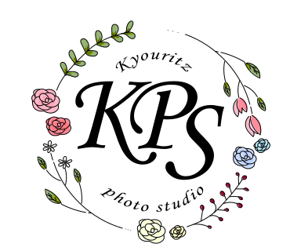

Kana Uchida’s portfolio

Kyouritz wedding photo studio logo
おふたりの想いに寄り添う、丁寧な撮影が伝わるウエディングフォトスタジオサイト
制作時間：1日
制作範囲：ロゴデザイン
使用ツール：

制作のポイント
・手書き感を出すために花びらや葉っぱはリピートを使わず一つ一つ丁寧に仕上げました。
・パスを閉じたくなかったためライブペイントツールを使わず、塗りだけのパスを形成して着色しました 。
・この作品は実際に学校で採用され、後輩生徒のwebサイト制作課題の素材として使用されました。
制作意図・工夫した点
■ 課題
おふたりの想いに寄り添う、やさしく上品なウェディングフォトスタジオの印象をロゴで表現すること
■ 工夫した点
頭文字である「KPS」を中心に配置し、スタジオ名を印象的に伝えられる構成にしました。
周囲には花や葉のモチーフをあしらうことで、ウェディングらしい華やかさとやわらかさを表現しています。
また、全体をリース状にまとめることで、祝福感や特別感を持たせつつ、親しみやすい印象になるよう意識しました。
装飾を入れつつもバランスが重くなりすぎないよう、線の細さや余白も調整しています。
■ 苦労した点
装飾モチーフを増やしすぎると視認性が落ち、ロゴとしての読みやすさが損なわれてしまう点
■ 解決方法
中心となる「KPS」がしっかり目に入るよう、文字の大きさと装飾の配置バランスを調整しました。
また、モチーフの色数や大きさを整理することで、華やかさを保ちながらもロゴとして認識しやすいデザインに仕上げました。
使用スキル
ロゴ設計
Illustrator
配色設計
バランス調整